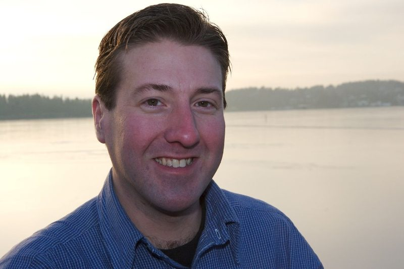

Lars Røyseng
Født i 1977 og oppvokst i Bærum. Han begynte å spille trekkspill hos Anders Grøthe da han var åtte år, og studerte senere ved Norges musikkhøgskole. Lars har erfaring som solist, teatermusiker og orkestermusiker, og har lenge vært kulturskolelærer og instruktør for klubber og barne- og ungdomsseminarer. Han har vært musikalsk leder for Asker og Bærum Trekkspillorkester og har arrangert Griegs «Fra Holbergs tid» for duoen.